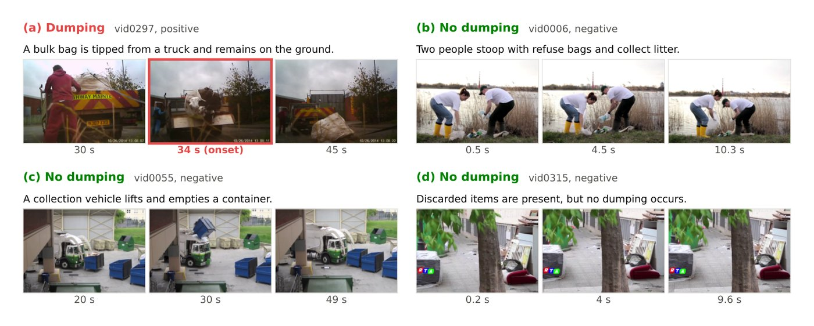

TRACE-VL: Change-Aware Vision–Language Modeling for Illegal Waste Dumping Detection and Onset Estimation
IEEE/CVF Winter Conference on Applications of Computer Vision (WACV), 2027
Dumping and legitimate waste handling look alike in motion; they differ in what stays behind. TRACE-VL models that outcome with persistence contrasts on SigLIP 2 features, text-initialized event queries and a calibrated onset posterior.
Recognizing the illegal dumping of waste in surveillance video requires deciding whether an act of disposal occurred and when it began. Dumping and legitimate handling of waste often involve similar motion and differ in their outcome: whether an object stays behind once the actor has left. We present TRACE-VL, which represents this outcome explicitly. Frame embeddings from a frozen SigLIP 2 encoder with low-rank adapters are augmented with persistence contrasts between the scene shortly after and shortly before each instant, encoded at two temporal rates, and decoded by event queries initialized from textual descriptions of dumping and of the activities with which it is confused. The onset is reported as the time whose scoring window most probably contains the true onset, under a posterior that combines frame-level evidence with an onset prior, and all decision parameters are calibrated on scene-disjoint out-of-fold predictions. On the 100-video MIVIA-IWDD validation set, the proposed approach achieves an F1 score of 0.788 and an ROC AUC of 0.903 for video-level detection. Evaluation on the held-out private test set yields an F1 score of 0.405, highlighting the challenges of generalization across surveillance environments.
@inproceedings{bhat2027tracevl,
title = {{TRACE-VL}: Change-Aware Vision--Language Modeling for Illegal Waste Dumping Detection and Onset Estimation},
author = {Bhat, Mudasir Hussain and Lin, Daw-Tung},
booktitle = {Proceedings of the IEEE/CVF Winter Conference on Applications of Computer Vision (WACV)},
year = {2027}
}